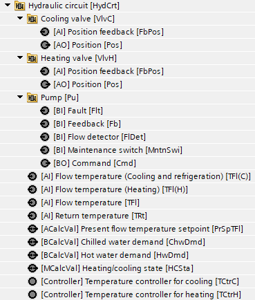
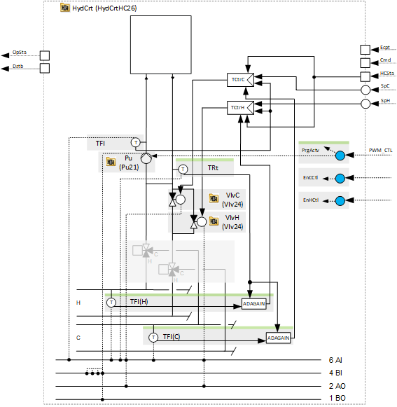
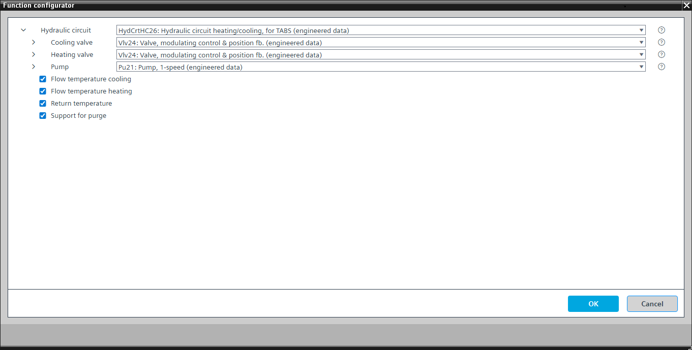

[HydCrtHC26] Hydraulic circuit heating/cooling, for TABS
Program block, name / node subtype: [HydCrtHC26] Hydraulic circuit heating/cooling, for TABS
Library hierarchy: Universal equipment
Family: HydCrtHC
Project tree | Diagram |
|---|---|
 |  |
Configurator


Program blocks are stored in the library without I/Os. Use the auto-create and auto-connect functions to create I/Os and/or to connect them to the interface blocks, e.g., R_A, CMD_B. Alternatively, take the I/Os from the folder containing the predefined I/Os in the library and/or from the plant and connect them to the interface blocks.
Function
Controls the flow temperature.
The program receives flow temperature setpoints for heating and cooling and displays the present flow temperature setpoint on BACnet with a calculated value object. It also receives a heating or cooling state signal and activates one of the two PID controllers to change the heating or cooling valve position to control the flow temperature. The pump runs when the function is enabled.
A parameter in the program defines whether the plant stops if the flow temperature sensor has a fault.
A program logic changes the high limit of the flow temperature alarm extension dynamically (according to the heating/cooling state).
Optional functions
This program block has the following optional functions:
Option: Return temperature (1xAI)
Creates an analog input for the return temperature and reads its signal. It can generate an alarm (high and low limit).
Option: Flow temperature heating (1xAI)
Creates an analog input for the heating supply temperature and reads its signal. It can generate an alarm (high and low limit).
The control quality can be improved through control factor matching (gain scheduling). This process uses the function block for adaptation of controller gain (ADAGAIN) based on input signals from the heating supply temperature and the return temperature.
This option can only be applied successfully together with the optional return temperature.
Option: Flow temperature cooling (1xAI)
Creates an analog input for the cooling supply temperature and reads its signal. It can generate an alarm (high and low limit).
The control quality can be improved through control factor matching (gain scheduling). This process uses the function block for adaptation of controller gain (ADAGAIN) based on input signals from the cooling supply temperature and the return temperature.
This option can only be applied successfully together with the optional return temperature.
Option: Support for purge
Provides an interface that closes the valves and turns on the pump for the purge operation.
With the correct hydraulic topology, the water circulates without supplying heating or cooling. This allows you to determine the state of the radiated heating or absorption system and act accordingly.
Mandatory elements
Name | Description | Type | Alarm / Notification class | Trend / Type | |
|---|---|---|---|---|---|
TFl | Flow temperature | AI: Analog input | Yes, 4 | Yes, 2 | |
HCSta | Heating/cooling state | MCalcVal: Multistate calculated value | No | No | |
PrSpTFl | Present flow temperature setpoint | ACalcVal: Analog calculated value | No | No | |
TCtrC | Temperature controller for cooling | Ctr: Controller | N/A | N/A | |
TCtrH | Temperature controller for heating | Ctr: Controller | N/A | N/A | |
VlvC | Cooling valve | N/A | N/A | ||
VlvH | Heating valve | N/A | N/A | ||
Pu | Pump | N/A | N/A | ||
ChwDmd | Chilled water demand | BCalcVal: Binary calculated value | No | No | |
HwDmd | Hot water demand | BCalcVal: Binary calculated value | No | No | |
Optional elements
Name | Description | Type | Alarm / Notification class | Trend / Type | |
|---|---|---|---|---|---|
TRt | Return temperature | AI: Analog input | Yes, 4 | Yes, 2 | |
Further options
Description |
|---|
Flow temperature heating Elements that belong to this option: TFl(H) | Flow temperature (heating) | AI: Analog input | Yes, 4 | Yes, 2 |
Flow temperature cooling Elements that belong to this option: TFl(C) | Flow temperature (cooling and refrigeration) | AI: Analog input | Yes, 4 | Yes, 2 |
Support for purge |